Biomechanics and Bioinspiration
Bio-Inspiration
- Robotic Systems help us understand the biological world
- Can mimic biological structures
- Experiments can be designed and repeated vs. observed.
- Variation in form and function can be introduced
The Human Skeleton - A (Branching) Serial Mechanism
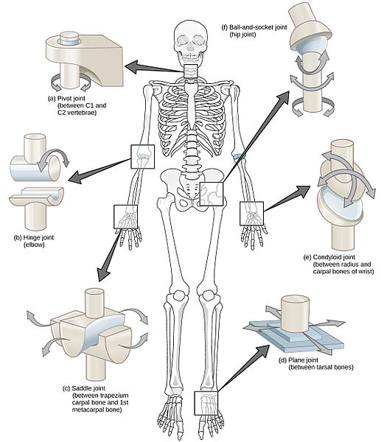
-
CNX OpenStax, CC BY 4.0, via Wikimedia Commons
-
Many human joints can be approximated by “basic” joint types
Skeletons Can be Parallel Mechanisms
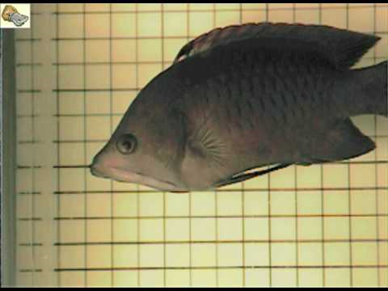 Video
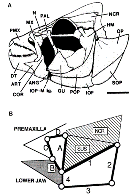
-
https://www.youtube.com/watch?v=pDU4CQWXaNY
-
Westneat, M.W. (1990), Feeding mechanics of teleost fishes (Labridae; Perciformes): A test of four-bar linkage models. J. Morphol., 205: 269-295. https://doi.org/10.1002/jmor.1052050304
Arthropod Joints
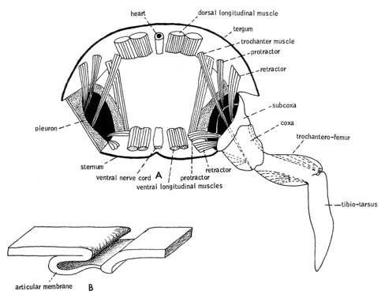
- From Barnes, R. D. 1964. Invertebrate Zoology. W. B. Saunders. Philadelphia. Found here
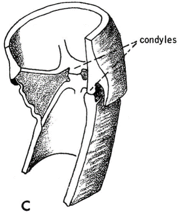
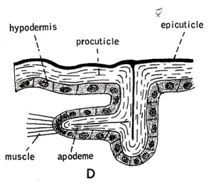
Arthropod Joints
- Different Joint types, different degrees of freedom

- Wootton, Robert J.. “Invertebrate paraxial locomotory appendages: design, deformation and control.” The Journal of experimental biology 202 Pt 23 (1999): 3333-45 .
Skeletal Muscle Tissue
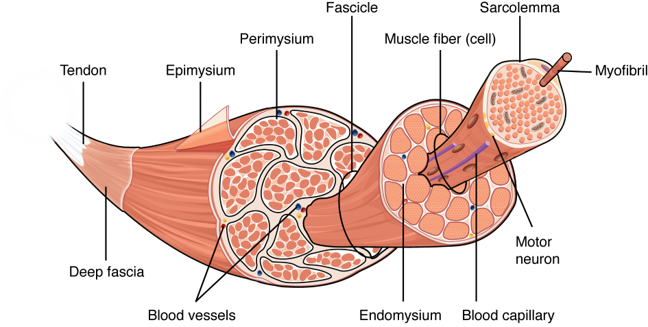
- https://open.oregonstate.education/aandp/chapter/10-2-skeletal-muscle/
- Anatomy & Physiology by Lindsay M. Biga, Sierra Dawson, Amy Harwell, Robin Hopkins, Joel Kaufmann, Mike LeMaster, Philip Matern, Katie Morrison-Graham, Devon Quick & Jon Runyeon is licensed under a Creative Commons Attribution-ShareAlike 4.0 International License, except where otherwise noted.
Skeletal Muscle
- Biewener, Andrew & Gillis, Gary. (2000). Dynamics of muscle function during locomotion: Accommodating variable conditions. The Journal of experimental biology. 202. 3387-96. 10.1242/jeb.202.23.3387.
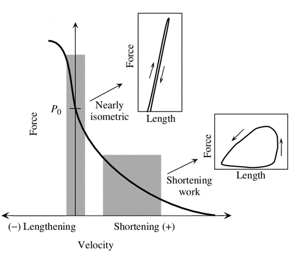
Work Loop
- https://en.wikipedia.org/wiki/Work_loop
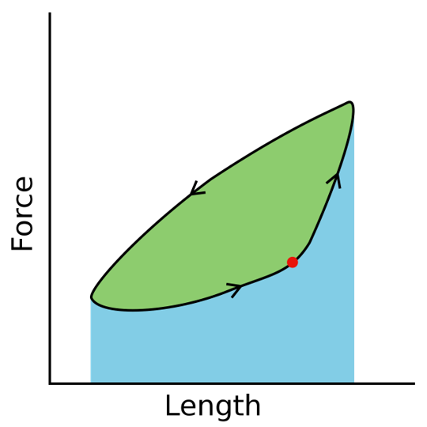
Muscles can do Different things

- Roberts, T. J., & Azizi, E. (2011). Flexible mechanisms: the diverse roles of biological springs in vertebrate movement. Journal of Experimental Biology, 214(3), 353–361. https://doi.org/10.1242/jeb.038588
Inverted Pendulum vs Spring-Loaded Inverted Pendulum

Passive Dynamic Walker
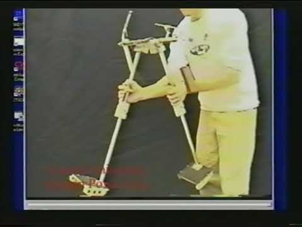 Video
SLIP Legs

Implementations of SLIP
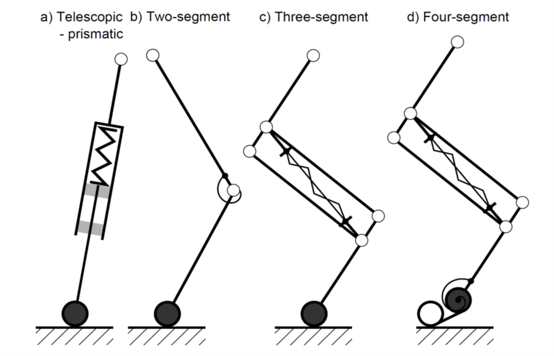
- A. Sprowitz, A. Tuleu, M. Vespignani, M. Ajallooeian, E. Badri, and A. J. Ijspeert, “Towards dynamic trot gait locomotion: Design, control, and experiments with Cheetah-cub, a compliant quadruped robot,” Int. J. Rob. Res., vol. 32, no. 8, pp. 932–950, Jul. 2013.

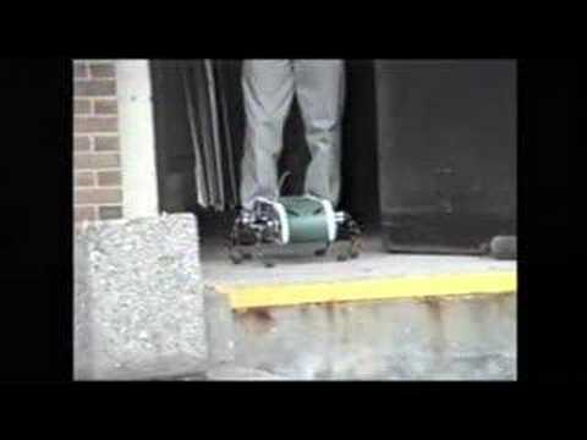 Video
Cheetah Cub

MIT Cheetah
Different Animals
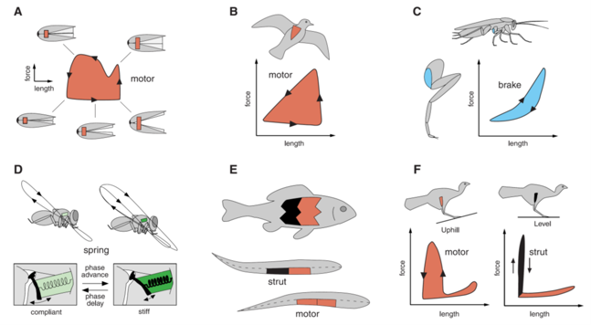
- M. H. Dickinson, “How Animals Move: An Integrative View,” Science (80-. )., vol. 288, no. 5463, pp. 100–106, Apr. 2000.
Peristaltic Locomotion
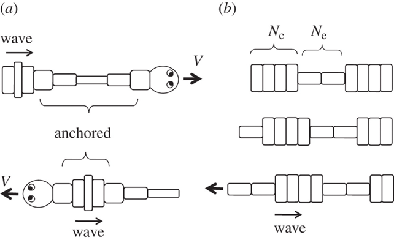
- Mechanics of peristaltic locomotion and role of anchoringJ. R. Soc. Interface.9222–233http://doi.org/10.1098/rsif.2011.0339
Peristaltic

Undulatory
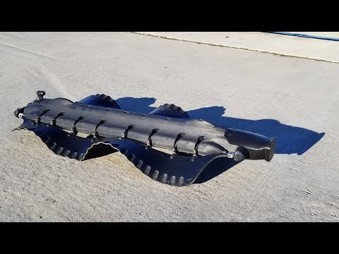 Video
Swimming In Sand

Climbing with Stickybot

Foldable-Compatible Legged

- Already Foldable
- Dash
- HAMR
- DynaROACH
- Non-Foldable
- ATRIAS/Cassie
- Penn Jerboa
- Stanford Doggo

HAMR
DASH
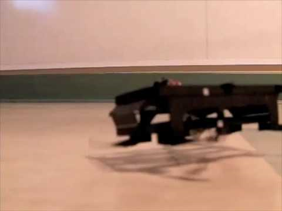 Video
ATRIAS Family
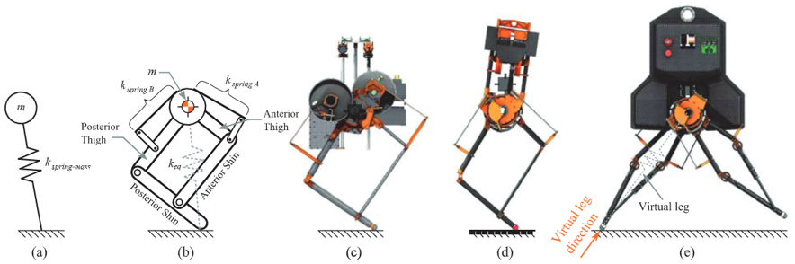